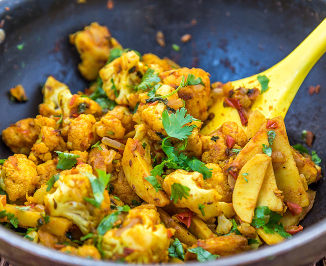

Aloo Gobi
Submitted by Iqrah Tauhid
Aloo gobi is a staple dish in a Pakistan diet, and it translates directly to
cauliflower and potatoes. While
the spiciness of the dish depends on the person cooking it, it is a dish that is
relatively quick to whip up and
so something that is eaten often at home. It's a vegetarian dish, and a little bit
on the heavy side, so it can
be cooked for dinner time.
Caution : The dish can be extremely spicy, so it is advisable to either reduce the amount
of spice added to the dish,
or to serve yogurt as a side dish to help deal with the spiciness.
Ingredients
- 6 tablespoons vegetable oil
- 1/2 teaspoon cumin seed
- 1 small onion, quartered and sliced
- 2 jalapenos, minced
- 1 teaspoon ginger paste
- 2 teaspoons ground coriander
- 1/4 teaspoon paprika
- 1/2 teaspoon turmeric powder
- 1/2 teaspoon cayenne pepper
- 1/2 teaspoon garam masala
- 2 medium baking potatoes, peeled and cut into 1 inch pieces
- 1 teaspoon salt
- 1/2 head cauliflower, cut into florets
- 1 medium tomato, quartered and diced
Instructions
- Heat 4 tablespoons of oil in a large pot over medium heat. Fry the cumin seeds for a few seconds until they turn golden brown.
- Reduce the heat a little and stir in the onion, cooking it until lighly browned.
- Add in cumin, jalapeno, ginger, coriander, paprika, turmeric, cayenne, garam masala salt, and tomato.
- Cook the mixture for 2-3 minutes, making sure to stir regularly.
- Stir in the potatoes and cover and cook for 5-7 minutes. Add the cauliflower, cover
the pot again, and
cook until the cauliflower is tender (about 20 minutes). - Pour the remaining 2 tablespoons of oil around the edges of the pot, increase the heat, and fry for 3-5 minutes to brown the cauliflower.
- Stir gently to avoid mashing the cauliflower.